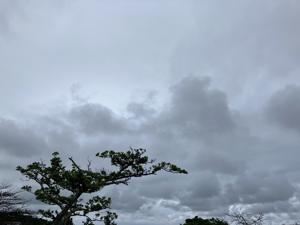
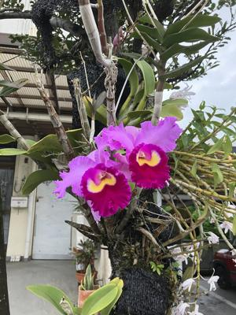
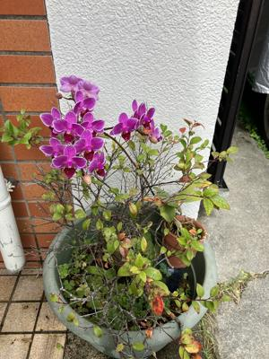

うるがいの話 ある日
最新: 記憶力【うるがいの話 ある日】とは 一日だけのプログです
『うるがいの話』の最新一日だけのプログで、通信料が少なく経済的だ。カニの画像をクリックすると全ての日付が載る『うるがいの話』サイトを表示します
|
|
【うるがいの話】 うるがい(ｳﾙｶﾞｲ urugai)とは、『もずくがに』の名前でとても大きくなります。 |
|---|---|
|
|
【カミマヤーの話】 猫のことを方言でマヤーといいます。カミマヤー（kamimayaa）とは、神の猫のことです。 |
|
【たながぁの音楽】 たながぁ（ﾀﾅｶﾞｰ tanagaa）とは手長えびのことで、何種類かあり大きいのは車 エビぐらいになります。 |

|
【ぶながぁの話】 ぶながぁ(ﾌﾞﾅｶﾞｰ bunagaa)とは、赤い髪の毛、赤い身体、そして身長は１ｍ２０ｃｍ ぐらい、川の蟹を食べているの目撃された。場所は沖縄県国頭郡大宜味村のと ある村僕の隣近所に住んでいる爺さんから、聞いた話です。 |
|
|
【ギーマの話】 ギーマ(giima)とは、山原の里山に咲くスズランに似た、 花を付けます。実は食べられます、 気が付くと口の周りが紫になっています。 |
2025年04月02日 (水）記憶力
17:11

ジョギング用のスポーツソックスが、壊れてきたので近頃は通勤ソ
ックスを利用する。そういえば、大学のバスケット部の同期で、黒
のオジサンソックスを履いて、部活をする同学年がいた。ヨメにそ
の話をしようと思うのだが、顔は分かっているが、名前が出てこな
い。たしか高校は、ヨメとおなじ学校だったとヨメが言っていた。
しばらくしても、思い出せないので諦める。そういえば、名前と言
えば、腰痛のときお世話になった整体の先生の名前も、毎度のこと
ながら思い出せない。
そして、朝瞑想していると『ヒロヤス』とオジサンソックスの名前
が、突然出てきた。そして、ほぼ一日たったところで、突然『仲原
漢方クリニック』が、そうそう中原 中也（なかはらちゅうや）と
似ているのだ。
いま、台湾の「ボポモフォ」を覚えている。ボポモフォと紐づいた
３７単語も合わせて覚える。詰め込みすぎと思うが・・・・。だか
ら、引き出しから出すのに時間がかかっているのである。ボケでは
ないと思う。小学２年生のとき童話大会で、５分ほどの話を３日間
で近所のヒロコおねぇさんの応援で、覚えた。懐かしい思い出であ
る。
カトレヤ！、道路沿いでこの写真を撮るため車が無くなるまで待っ
ていると、横断すると勘違いした車が、停車した。親切な人もいる
もんだ、その車がいなくなった後、道路から写真を撮る。

胡蝶蘭、鉢に雑に植えられているが。
